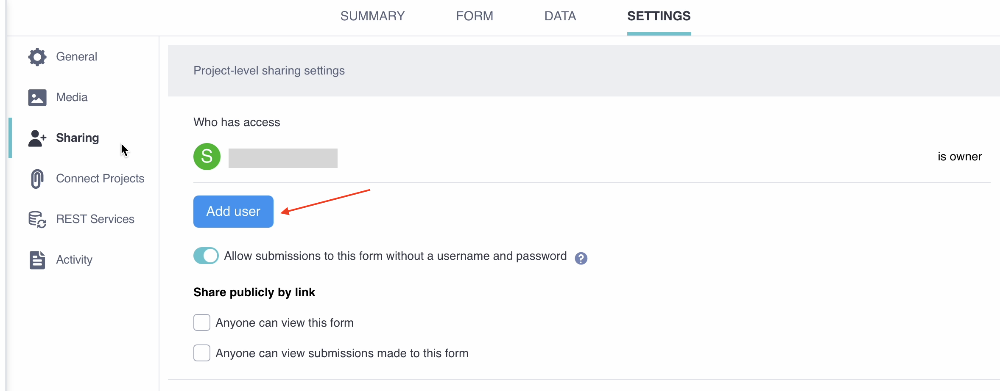

Search the knowledge base, browse our resources, and visit our forum for more detailed information
Read in English | Leer en español | اقرأ باللغة العربية Dernière mise à jour : 29 août 2025
KoboToolbox vous permet de définir différents niveaux d’accès pour les utilisatrices et utilisateurs sur chaque projet. Certaines utilisatrices et certains utilisateurs peuvent avoir besoin uniquement de soumettre ou de consulter des données, tandis que d’autres nécessitent un accès plus avancé, comme la modification de formulaires, la validation de soumissions ou la modification de données.
Cet article explique comment accorder des permissions à d’autres utilisatrices et utilisateurs de KoboToolbox pour collaborer sur vos projets. Il couvre les permissions au niveau utilisateur, les permissions au niveau des lignes et la copie de permissions depuis un autre projet.
Pour en savoir plus sur le partage de votre projet avec d'autres personnes pour la collecte de données, consultez Collecter des données via des formulaires Web. Pour en savoir plus sur les paramètres au niveau du projet pour partager vos projets, consultez Partager des projets avec des paramètres au niveau du projet.
Les permissions au niveau utilisateur vous permettent de partager les données d’un projet avec d’autres utilisatrices et utilisateurs de KoboToolbox et de contrôler leur accès à votre formulaire ou à vos soumissions.
Pour configurer des permissions au niveau utilisateur :
Accédez à la page PARAMÈTRES de votre projet de collecte de données et cliquez sur Partage.
Sous la liste des utilisatrices et utilisateurs ayant un accès actuel, cliquez sur Ajouter un utilisateur.
Saisissez le nom d’utilisateur de la personne avec laquelle vous souhaitez partager le formulaire.
Sélectionnez le niveau de permission souhaité.
Cliquez sur ACCORDER DES PERMISSIONS.

Les permissions suivantes sont disponibles :
Permission |
Description |
|---|---|
Voir le formulaire |
L’utilisatrice ou l’utilisateur peut prévisualiser le formulaire. |
Modifier le formulaire |
L’utilisatrice ou l’utilisateur peut modifier le formulaire. |
Voir les soumissions |
L’utilisatrice ou l’utilisateur peut consulter les données soumises. |
Ajouter des soumissions |
L’utilisatrice ou l’utilisateur peut soumettre des données en utilisant le formulaire. |
Modifier les soumissions |
L’utilisatrice ou l’utilisateur peut modifier les données soumises. |
Valider les soumissions |
L’utilisatrice ou l’utilisateur peut approuver ou rejeter les données soumises. |
Supprimer les soumissions |
L’utilisatrice ou l’utilisateur peut supprimer les données soumises. |
Gérer le projet |
L’utilisatrice ou l’utilisateur peut effectuer toutes les actions ci-dessus et gérer les paramètres du projet. |
Remarque : Lorsque certaines permissions sont accordées, d'autres permissions sont également accordées automatiquement. Par exemple, si une utilisatrice ou un utilisateur se voit accorder la permission Ajouter des soumissions, la permission Voir le formulaire lui sera également accordée automatiquement.
Les permissions au niveau des lignes vous permettent de définir des permissions de consultation, de modification, de validation et de suppression pour les soumissions en fonction de conditions prédéfinies. Ces permissions peuvent être :
Uniquement d’utilisatrices et utilisateurs spécifiques : Les permissions basées sur l’utilisateur vous permettent de partager les données d’un projet avec une autre utilisatrice ou un autre utilisateur de KoboToolbox uniquement lorsqu’elles sont soumises par des utilisatrices et utilisateurs spécifiques. Cela peut être utile pour permettre aux collectrices et collecteurs de données de consulter et de modifier leurs propres soumissions sans accéder aux données d’autres collectrices et collecteurs.
Basées sur une condition : Les permissions basées sur une condition accordent l’accès aux données du projet en fonction d’une réponse à une question de votre formulaire. Par exemple, cela peut être utilisé pour partager des données collectées avant une certaine date ou pour une région spécifique.
Pour ajouter des permissions basées sur l’utilisateur :
Ouvrez votre projet et accédez à l’onglet PARAMÈTRES.
Accédez à la section Partage.
Cliquez sur Ajouter un utilisateur et saisissez le nom d’utilisateur de la personne avec laquelle vous souhaitez partager le projet.
Sélectionnez les permissions basées sur l’utilisateur que vous souhaitez autoriser (Voir, Modifier, Supprimer et/ou Valider).
Sous chaque permission, saisissez le ou les noms d’utilisateur des personnes dont vous accordez l’accès aux soumissions. Les noms d’utilisateur doivent être séparés par des virgules.
Cliquez sur Accorder des permissions pour enregistrer vos paramètres de permissions.
Une fois que vous avez enregistré vos permissions, l’utilisatrice ou l’utilisateur avec qui vous avez partagé le projet pourra consulter, modifier, valider ou supprimer les données du projet soumises par les noms d’utilisateur spécifiés, selon les permissions sélectionnées.
Pour ajouter des permissions basées sur une condition :
Ouvrez votre projet et accédez à l’onglet PARAMÈTRES.
Accédez à la section Partage.
Cliquez sur Ajouter un utilisateur et saisissez le nom d’utilisateur de la personne avec laquelle vous souhaitez partager le projet.
Sélectionnez les permissions basées sur une condition que vous souhaitez autoriser (Voir, Modifier, Supprimer et/ou Valider).
Ouvrez le menu déroulant Sélectionner… pour afficher la liste complète des questions du formulaire et sélectionnez la question qui doit être utilisée pour filtrer les soumissions partagées avec l’utilisatrice ou l’utilisateur.
Sur le côté droit du signe égal (=), saisissez la valeur de réponse qui doit être satisfaite.
Cliquez sur Accorder des permissions pour enregistrer vos paramètres de permissions.
Une fois que vous avez enregistré vos permissions, l’utilisatrice ou l’utilisateur pourra consulter, modifier, valider ou supprimer les soumissions de données du projet qui répondent à la condition spécifiée, selon les permissions sélectionnées.
Les valeurs de réponse doivent suivre un format spécifique pour que la condition fonctionne :
Type de question |
Format |
|---|---|
Date |
|
Sélectionner un et Sélectionner plusieurs |
Valeur XML/nom du choix (par ex., |
Nombre et Décimal |
Un nombre entier ou décimal spécifique |
Pour copier les permissions d’équipe depuis un autre projet :
Ouvrez l’onglet Partage dans la page PARAMÈTRES de votre projet.
Cliquez sur « Copier l’équipe depuis un autre projet ».
Sélectionnez le projet depuis lequel vous souhaitez copier les permissions.
Remarque : Cela écrasera tous les paramètres de partage existants sur le projet auquel vous ajoutez les permissions.
developer ne correspondra pas à software_developer. Écrivez la valeur complète que vous attendez, ou ajustez votre formulaire pour que la valeur exacte soit capturée.
Did you find what you were looking for? Was the information clear? Was anything missing?
Share your feedback to help us improve this article!
KoboToolbox is maintained by Kobo Inc.